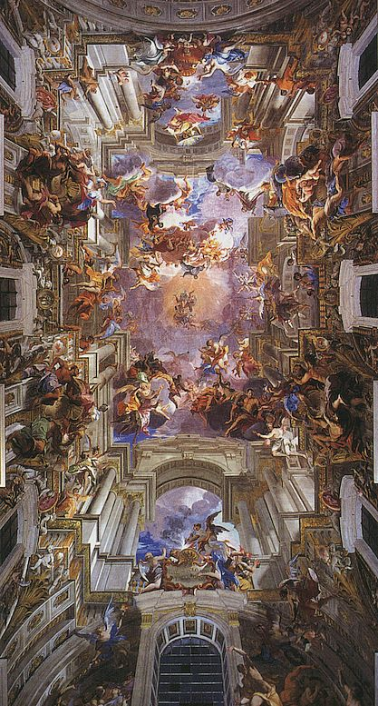
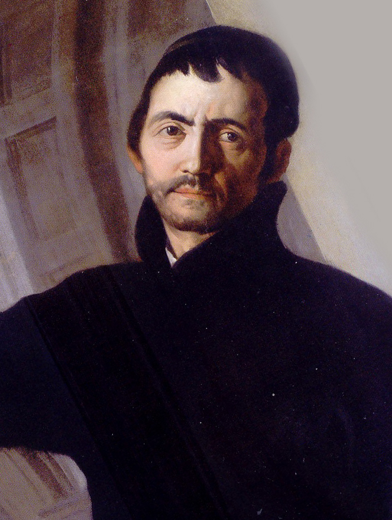

Gloria di Sant'Ignazio
DESCRIZIONE
Al centro della grande volta dipinta si trova il fondatore della compagnia del Gesù, Sant’Ignazio di
Loyola. Gloria di Sant’Ignazio è, in effetti, una vasta allegoria che ha l’intento di celebrare
l’investitura
da parte di Dio, attraverso Cristo, del Santo e di tutti i membri della compagnia del Gesù. Così, la luce
mistica, al centro, investe il protagonista e, quindi, si irradia verso gli altri gesuiti. Da questi, poi,
raggiunge i quattro continenti conosciuti al tempo rappresentati a coppie sui lati lunghi dell’affresco.
L’Europa è rappresentata come una regina a cavallo che domina il globo azzurro. In senso orario, poi,
l’America è dipinta come una indiana, con un panno a forma di gonnellino e una corona di piume rosse e
azzurre. Viene, quindi, l’Africa, di colore scuro e, infine, l’Asia a cavallo di un cammello.
Sant’Ignazio è in alto, al centro su una grande nuvola chiara con intorno molte figure che aleggiano.
Davanti a lui si trova Cristo con in braccio una pesante croce. Dalle loro figure l’immagine si allontana,
in alto, con un volo di altri personaggi che si rimpiccioliscono progressivamente e si smarriscono nella
lontananza.
STILE
L’affresco prosegue le architetture reali dell’ambiente sottostante. Infatti, grazie all’uso
della prospettiva geometrica, osservando dal basso, si possono apprezzare colonne, pareti, archi e
pilastri tra i quali si librano i personaggi dipinti. Questo effetto di sfondamento virtuale del
offitto architettonico fu tipico del Barocco. Attraverso le architetture disegnate di scorcio, in
molte chiese dell’epoca, vennero, così, realizzate elaborate scene che glorificano un personaggio
religioso.
Scannerizza il QRcode con la fotocamera del tuo cellulare per visualizzare l'opera in realtà
aumentata
ANDREA POZZO
Andrea Pozzo, anche nelle forme Del Pozzo, Dal Pozzo e Pozzi,
è stato un gesuita, architetto, pittore, decoratore e teorico dell'arte italiano. Artista straordinariament
e versatile, fu una figura significativa del tardo barocco.
VITA E OPERE
Andrea Pozzo nacque a Trento da Jacopo e Lucia Pozzo il 30 Novembre 1642. Frequentò fino all’età di diciassette
anni la scuola dei Gesuiti della città ma il padre, visti gli scarsi risultati e la passione del figlio per il
disegno, decise di mandarlo come apprendista presso un pittore.
Quindi, Andrea Pozzo apprese l’arte della pittura ma scelse nel 1665 la vita religiosa entrando nella Compagnia
di Gesù. Sono poche le notizie riguardo la sua vita di uomo.
Una documentazione dell’Archivio ARSI lo descrive come uomo di chiaro ingegno, modesto che svolgeva il suo
lavoro sempre con dedizione.
Nel 1677 a Roma affrescò i corridoi della Casa Professa dei Gesuiti, un lavoro lasciato incompleto dal
Borgognone. In questo periodo Andrea Pozzo si alternava tra la Compagnia di Gesù e la sua attività di pittore.
La sua più importante opera romana è la volta della Chiesa di S. Ignazio, la cosiddetta Apoteosi di Sant’
Ignazio che realizzò con l’aiuto di suoi allievi e qui si scoprirono anche le sue indubbie capacità di
architetto.
Di lui si diceva che era un religioso e uomo d’arte con infinite virtù, umile e semplice, e che con la sua arte
sarebbe stato annoverato tra i migliori architetti e scenografi del suo tempo.
Morì a Vienna il 31 Agosto 1709 e insieme a Gian Lorenzo Bernini e Peter Paul Rubens è oggi considerato uno dei
tre grandi artisti che esprimono l’arte della Compagnia di Gesù e il Gesuita più conosciuto nel mondo.

